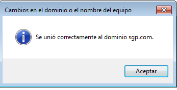

- Módulo: Sistemas Operativos
- Título del trabajo Plantilla HTML entrega de trabajo
- Componentes del grupo: David Vargas
- Curso Académico: 2013/2014
- Fecha de entrega: 1 de Enero de 2014
Comienzo de instalación
Agregació de funciones
Instalación de las funciones marcadas anteriormente
Al ir a Panel de control --> Impresoras podemos ver el PDF creator
Nos hará falta un dominio, por lo tanto sino tenemos ninguno nos haría falta crearlo.
Vamos a las propiedades del PDF creator y activamos la compartición.
Comprobamos de que esta compartida.
Para probar que el PDF creator funciona probamos mandar un documento.
Comprobación de que el archivo se ha creado correctamente.

Una vez terminado con todo esto en el servidor vamos a un cliente Windows 7 y nos unimos a dominio.

Ahora tenemos que ir al navergador de nuestro cliente y poner la IP del servidor y nos salen las propiedades de la impresora. A mi no me funciono esa parte me daba un fallo y descubrí con ayuda del profesor que era por que no tenia el servidor IIS instalado, lo instale y tampoco me dejaba conectarme y no encontre el fallo